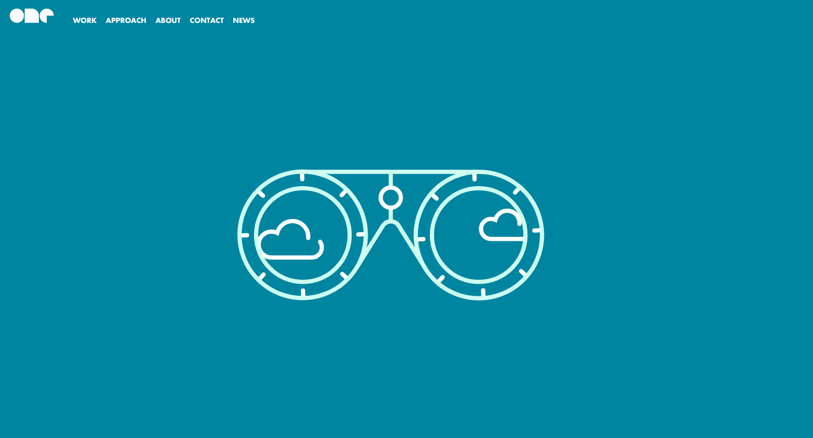

One Design
I really love the animation sytle of this website. It's very simplistic
and has smooth transitions. The animations make it feel professional and at the end you want to see more. Doing this
is effective in getting the viewer interested and engaged.